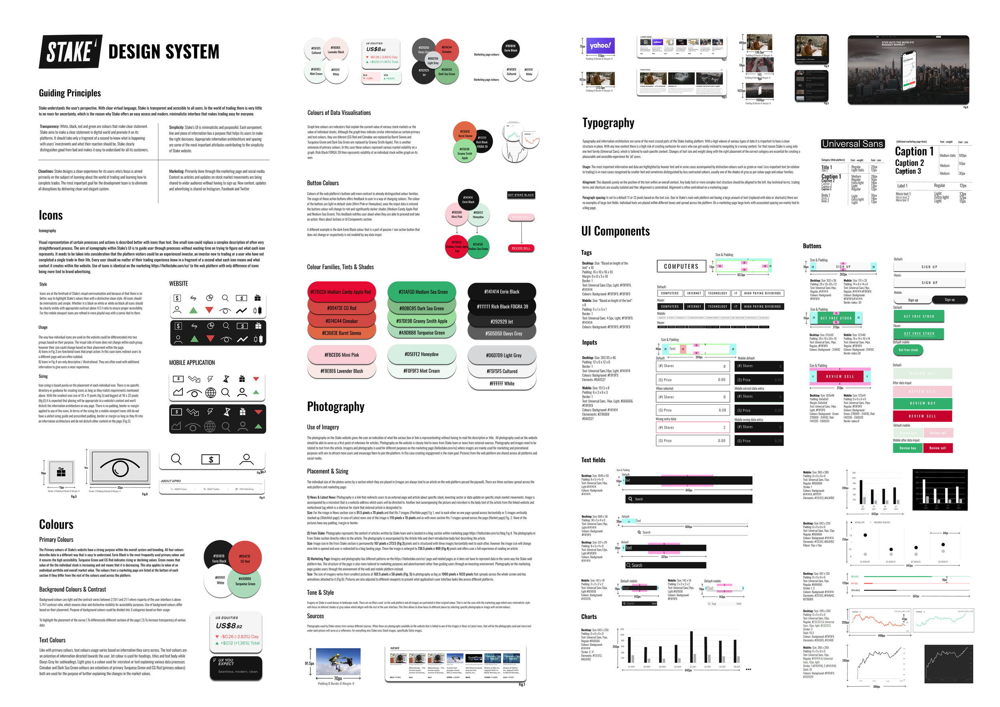

Principles
The system centered on transparency, cleanliness, and simplicity: minimal UI, clear signals, and consistent hierarchy in an environment where financial data must be understood quickly.
Stake • 2022
A reusable UI system for a fast-growing investing platform, designed to improve consistency, communication, and speed across product work.

Context
Stake was evolving quickly across its web platform, mobile app, and marketing surfaces. That pace created pressure: new features were rolling out, internal and external communication needed structure, and designers and developers needed a clearer shared framework.
The task was to define a design system that covered style guidance, UI components, typography, color, iconography, photography, and a set of principles that could support future product growth.
The system centered on transparency, cleanliness, and simplicity: minimal UI, clear signals, and consistent hierarchy in an environment where financial data must be understood quickly.
I documented color behavior, type usage, iconography, spacing, and component rules so product patterns could be reused instead of re-invented.
The work gave Stake a stronger internal reference point for design and development decisions, reducing ambiguity and improving consistency across digital assets.
Method
Because Stake already had public product surfaces, I used browser inspection and comparative review of public design systems to identify patterns worth formalising. The work was part reconstruction, part codification, and part forward-looking framework design.
A large part of the value came from turning existing interface decisions into something documented, repeatable, and easier for teams to use consistently.
Takeaway
For a trading product, clarity is not a visual preference. It is functional. Strong systems make high-stakes interfaces easier to build and easier to trust.